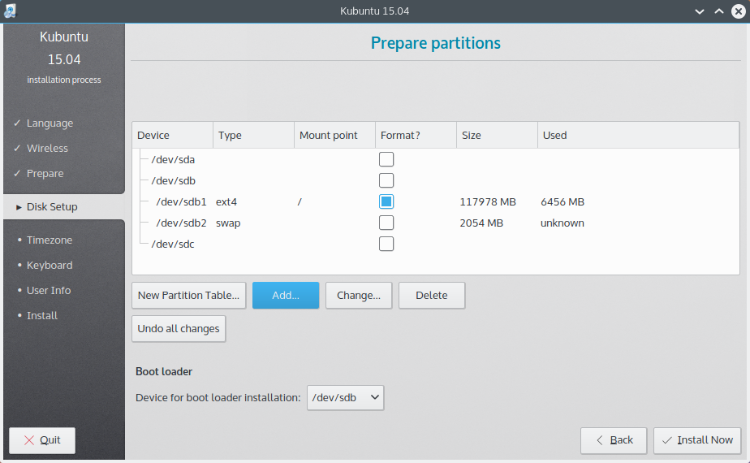
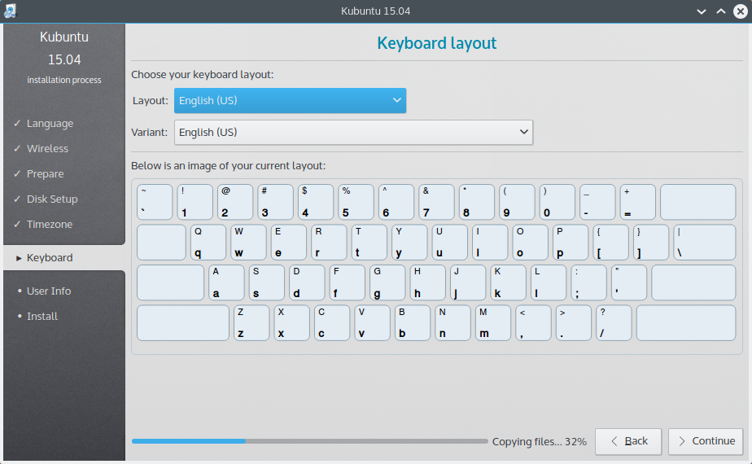
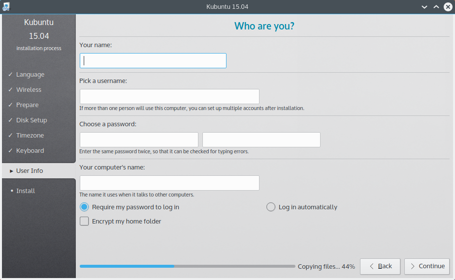

Installation¶
Why try Kubuntu?¶
There are many good reasons to install Kubuntu! Some of them include:
- Kubuntu makes your PC friendly.
- Kubuntu is an operating system built by a friendly worldwide team of expert developers. It contains all the applications you need: web browser, office suite, media apps, instant messaging, and many others. For a list of the included software, see the Software page.
- Kubuntu is a free, open-source alternative to Windows and Mac OS X.
- Easily install beside, or instead of, Windows.
Preparing the Installation media¶
Getting the ISO(Disc Image):
Download it though Get Kubuntu.
Windows 7/8¶
USB/Flash Drives¶
For a GUI (Graphic User Interface) we use UNetBootin.
If you choose the Diskimage option you use the ... button to select your downloaded ISO. Then click OK.

Pay special attention when selecting the right USB device under ‘Drive’ |
Existing Kubuntu Install¶
USB/Flash Drives¶
Since UNetBootin is a cross-platform application we will be using the same instructions from USB/Flash Drives
Be extremely careful to set /dev/sdX to the right value, if you point it to your hard drive you will wipe the disk. |
DVD¶

Look for More actions... click it then pick Burn image... from the list of actions

Then you select the ISO(Disk Image) that you want to burn to the DVD from your computer.
Most torrent and browsers store your downloads in the ‘Download’ directory. |
Most of the default setting for K3b for DVD burning are fine |
Other Linux Distributions¶
GNOME Environment¶
USB/Flash Drives¶
For USB/Flash Drives we’ll be stick to using UNetBootin from this tutorial: USB/Flash Drives

KDE Environment¶
USB/Flash Drives¶
DVD¶
You can follow the same instructions as a Existing Kubuntu Install
Install Process¶
First we’ll need the Kubuntu Disk Image(ISO) from here: Preparing the Installation media

When the installer starts you will see these options:
- Try out Kubuntu without changing anything on your computer
- Install Kubuntu on your computer.
Prepare¶
Fro the best result, ensure that:
- Your computer has enough room for Kubuntu and your data - your songs, pictures, videos, and documents.
- Your computer is connected to the Internet so that you can download updates and third-party software as Kubuntu is installing.

Include this third-party software: includes software that either does not follow the Open Source model or the Ubuntu Philosophy, but is safe for use on your system.
Download updates while installing: will ensure that you have the latest bug and security fixes included and applied once the installation is complete.
Disk Setup¶

This is where you choose how to organize your hard drive. This step is the most complicated and consequential in the entire install process, so take your time.
You will be able to change your mind and go back until the Install Now button is clicked |
The following sections are some possible installation scenarios you might choose. Each of these choices points to a page or series of pages with more details. For each option (except Manual), the installer asks which hard drive to use. After choosing, you will see a before and after layout on that hard drive.
Resize¶
This will resize the partitions for you and install Kubuntu on the free space. With this option you can create what is called a dual-boot and choose which OS to boot into at startup.

This is available only at least 25GB can be freed |
Use entire disk¶
This will wipe all your data |
Use entire disk and set up encrypted LVM¶
More about encrypted file systems
Manual¶
When using Manual to set up your system as you would like it, keep these thoughts in mind:
- The root ( / ) directory needs at least 25 GBs of space.
- The home ( /home ) directory needs as much space as you will need for your files, music, pictures and documents. So it is best to use the remaining space for the home partition, unless you have going to dual boot.
- Swap space of at least half of the available RAM is recommended. For instance, with 8 GBs, make the swap with at least 4 GBs.
If you have a Windows 8 sticker on your machine you might need to make a separate EFI partition with a fat32 filesystem. |
For more detailed information regarding the Disk Setup of a linux system you can check the DiskSpace page.
Timezone¶
During this step you get to pick the Region where you live and then the Timezone of the location in that Region. An example would be that I live in New York, so my Region is North America and my Timezone is New York.

Keyboard¶
This is the step that will set up your keyboard’s language and, if the language has it, a different version of the language. For example, there is a Cherokee American English setting as well as different setups with special keys used in certain countries; in Kubuntu we try to make the system easy for everyone!
User Info¶
At this step of the installation you will be putting in user information like your name, username, and password. The password will be your key to logging into your new installation as well as installing new software, updating your system, and more, so keep it written down somewhere!
